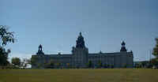

|
|

STE-ANNE-DE-LA-POCATIÈRE

|
In 1678 a parish named La Combe was established on the south shore of the St. Lawrence by
Monseigneur de Laval. It changed its name to
Grande Anse, or Sainte-Anne-de-la-Grande-Anse, and kept it
until 1721. The present name of the municipality,
created in 1845 (La Pocatière split off from it in 1960), comes
partly from the seigneury of La Pocatière.
The Pocatière landscape is marked by
remnants of an ancient Appalachian surface worn ragged by erosion,
which gives a somewhat jumbled relief. Among other things, this parish has
a very old school of agriculture (1852) with
a research station.
|
|

The Collège de
Sainte-Anne-de-la-Pocatière, founded
in 1827 by Father Charles-François Painchaud, was the
first secondary school to open east
of Quebec City.
|


|